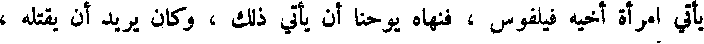
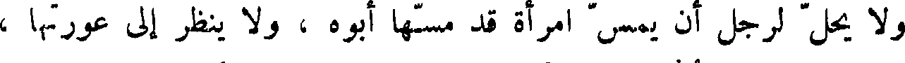
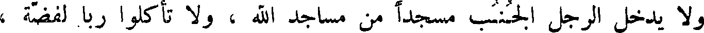
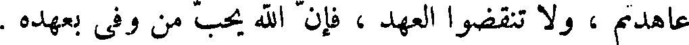
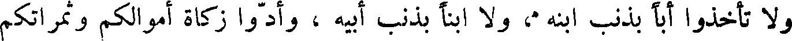
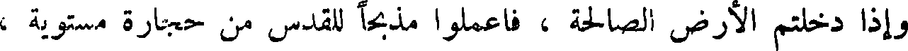

File: 000000.gt.txt (if the image is defective, simply delete all Arabic text and the line will be excluded)

يحفرون ، ولكي تكون ذخائركم عند ربكم الذي في السماء حيث لا سوس
File: 000001.gt.txt (if the image is defective, simply delete all Arabic text and the line will be excluded)

يعدو ولا لص يسرق .
File: 000002.gt.txt (if the image is defective, simply delete all Arabic text and the line will be excluded)

و لا تهتموا بمعاشكم ، و لا ما تأكلون ، ولا ما تشربون ، و لا ما تلبسون ،
File: 000003.gt.txt (if the image is defective, simply delete all Arabic text and the line will be excluded)

وانظروا إلى طير السماء لا يزرعن ، و لا يحصدن ، و لا يجمعن في البيوت
File: 000004.gt.txt (if the image is defective, simply delete all Arabic text and the line will be excluded)

الله يرزقهن ، وأنتم أكرم على الله من الطير .
File: 000005.gt.txt (if the image is defective, simply delete all Arabic text and the line will be excluded)

لا تهتموا لأولادكم ، فانهم مثلكم كما خلقتم خلقوا ، وكما رزقتم رزقوا .
File: 000006.gt.txt (if the image is defective, simply delete all Arabic text and the line will be excluded)

و لا تقل لأخيك اخرج القذى من عينك ، وفي عينك أنت جذع؛ لا تنظروا
File: 000007.gt.txt (if the image is defective, simply delete all Arabic text and the line will be excluded)

في عيوب الناس وتدعوا عيوبكم ؛ لا تعطوا القدس ولا اللؤلؤ للخنازير ،
File: 000008.gt.txt (if the image is defective, simply delete all Arabic text and the line will be excluded)

فتدوسه بأرجلها! سلوا ربكم يعطكم وابتغوا أليه ، فأنكم تجدونه رحيما بكم ،
File: 000009.gt.txt (if the image is defective, simply delete all Arabic text and the line will be excluded)

واقرعوا بابه يفتح لكم ، أما الباب فإنه معرض ، والطريق بين ، وهو يبلغ
File: 000010.gt.txt (if the image is defective, simply delete all Arabic text and the line will be excluded)

الناس التلف ، وما اصغر الباب ، وأضيق الطريق التي تبلغ الناس النجاة .
File: 000011.gt.txt (if the image is defective, simply delete all Arabic text and the line will be excluded)

تحفظوا من أهل الكذب الذين يشبهون الذئاب الضارية ؛ كما لا تستطيعون
File: 000012.gt.txt (if the image is defective, simply delete all Arabic text and the line will be excluded)

وتقطفون العنبة من الشوك ، ولا التين من الحنظل ، هكذا لا تجدون شجرة
File: 000013.gt.txt (if the image is defective, simply delete all Arabic text and the line will be excluded)

سوء تخرج نياتا صالحا ، و لا شجرة صالحة تخرج ثمرة سوء .
File: 000014.gt.txt (if the image is defective, simply delete all Arabic text and the line will be excluded)

كل من يسمع كلامي ثم يفهمه ، فانه يشبه رجلا حليما بنى بيته في
File: 000015.gt.txt (if the image is defective, simply delete all Arabic text and the line will be excluded)

مكان صلب شديد ، فجاء المطر ودرت الأنهار ، وارتفعت الرياح . . .1
File: 000016.gt.txt (if the image is defective, simply delete all Arabic text and the line will be excluded)

فسقط البيت .
File: 000017.gt.txt (if the image is defective, simply delete all Arabic text and the line will be excluded)

وفي ذلك الزمان كان الملك هيرودس قد اخذ يوحنا فسجنه ، وذلك انه كان
File: 000018.gt.txt (if the image is defective, simply delete all Arabic text and the line will be excluded)

يأتي امرأة أخيه فيلفوس ، فنهاه يوحنا أن يأتي ذلك ، وكان يريد أن يقتله ،
File: 000019.gt.txt (if the image is defective, simply delete all Arabic text and the line will be excluded)

ويتقي لأنهم كانوا يعظمون يوحنا ، فقالت له امرأة أخيه : اقتل يوحنا !
File: 000020.gt.txt (if the image is defective, simply delete all Arabic text and the line will be excluded)

فوجه إلى السجن ، فقطع رأس يوحنا ووضعه على طبق ، واقترب تلاميذة ،
File: 000021.gt.txt (if the image is defective, simply delete all Arabic text and the line will be excluded)

واخذوا جثته فقبروها ، وجاءوا المسيح فأخبروه ، فخرج إلى ارض قفز ،
File: 000022.gt.txt (if the image is defective, simply delete all Arabic text and the line will be excluded)

وجعل يأمر أصحابه : لا تخبروا أحدا .
File: 000023.gt.txt (if the image is defective, simply delete all Arabic text and the line will be excluded)

و لا يحل لرجل أن يمس امرأة قد مسها أبوه ، و لا ينظر إلى عورتها ،
File: 000024.gt.txt (if the image is defective, simply delete all Arabic text and the line will be excluded)

و لا يدخل الرجل الجنب مسجدا من مساجد الله ، و لا تأكلوا ربا لفضة
File: 000025.gt.txt (if the image is defective, simply delete all Arabic text and the line will be excluded)

و لا ذهب ، وإذا نذرتم نذرا ، فلا تؤخروا قضاءه ، وأوفوا بالعهد ، إذا
File: 000026.gt.txt (if the image is defective, simply delete all Arabic text and the line will be excluded)

عاهدتم ، و لا تنقضوا العهد ، فان الله يحب من وفى بعهده .
File: 000027.gt.txt (if the image is defective, simply delete all Arabic text and the line will be excluded)

اعتزلوا من كان به برص ، وتباعدوا منه ، و لا تحبسوا اجر الأجير ،
File: 000028.gt.txt (if the image is defective, simply delete all Arabic text and the line will be excluded)

و لا تأخذوا أبا بذنب ابنه ، و لا ابنا بذنب أبيه ، وأدوا زكاة أموالكم وثمراتكم
File: 000029.gt.txt (if the image is defective, simply delete all Arabic text and the line will be excluded)

إلى الحبر قربانا ، وأعطوا الفقراء ، والأرامل ، واليتامى ، والمساكين ، وبني
File: 000030.gt.txt (if the image is defective, simply delete all Arabic text and the line will be excluded)

السبيل .
File: 000031.gt.txt (if the image is defective, simply delete all Arabic text and the line will be excluded)

وإذا دخلتم الأرض الصالحة ، فاعملوا مذبحا للقدس من حجارة مستوية ،
File: 000032.gt.txt (if the image is defective, simply delete all Arabic text and the line will be excluded)

فليقل أحبار بني إسرائيل : ملعون من يضل الأعمى عن الطريق .
File: 000033.gt.txt (if the image is defective, simply delete all Arabic text and the line will be excluded)

ملعون من يحيف في القضاء على المساكين ، واليتيم والأرملة .
File: 000034.gt.txt (if the image is defective, simply delete all Arabic text and the line will be excluded)

ملعون من يضاجع امرأة أبيه .
File: 000035.gt.txt (if the image is defective, simply delete all Arabic text and the line will be excluded)

ملعون من يضاجع دابة .
File: 000036.gt.txt (if the image is defective, simply delete all Arabic text and the line will be excluded)

ملعون من يضاجع أخته وأمه .
File: 000037.gt.txt (if the image is defective, simply delete all Arabic text and the line will be excluded)

ملعون من يضاجع أم امرأته .
File: 000038.gt.txt (if the image is defective, simply delete all Arabic text and the line will be excluded)

ملعون من يأكل لحم أخيه سراً .
File: 000039.gt.txt (if the image is defective, simply delete all Arabic text and the line will be excluded)
ملعون من يأخذ رشوة في قتل نفس زكيه ظلماً .
File: 000040.gt.txt (if the image is defective, simply delete all Arabic text and the line will be excluded)

ملعون كل من لم يعمل بوصية الله .
File: 000041.gt.txt (if the image is defective, simply delete all Arabic text and the line will be excluded)

ثم قال لهم موسى : قد بلغتكم وصايا الله ، وعرفتكم أمره ، فاتبعوا ذلك ،
File: 000042.gt.txt (if the image is defective, simply delete all Arabic text and the line will be excluded)

واعملوا به ، فقد أتت لي مائة وعشرون سنة ، وقد حانت وفاتي ، وهذا يوشع
File: 000043.gt.txt (if the image is defective, simply delete all Arabic text and the line will be excluded)

ابن نون القيم فيكم بعدي ، فاسمعوا له وأطيعواأمره ، فانه يقضي بينكم بالحق ،
File: 000044.gt.txt (if the image is defective, simply delete all Arabic text and the line will be excluded)
وملعون من خالفه وعصاه .
File: 000045.gt.txt (if the image is defective, simply delete all Arabic text and the line will be excluded)

وكانت بين وفاة هارون إلى أن حضرت موسى الوفاة سبعة اشهر ، ثم صعد
File: 000046.gt.txt (if the image is defective, simply delete all Arabic text and the line will be excluded)

موسى إلى جبل نابون ، فنظر إلى الشأم ، وقال الله له : هذه الأرض التي ضمنت
File: 000047.gt.txt (if the image is defective, simply delete all Arabic text and the line will be excluded)

بيت المقدس ، وبنى الهيكل ، وأقام على بنائه ستا وأربعين سنة ، وفي زمانه
File: 000048.gt.txt (if the image is defective, simply delete all Arabic text and the line will be excluded)

مسخ الله بخت نصر بهيمة أنثى ، فلم يزل ينتقل في أجناس البهائم سبع سنين ،
File: 000049.gt.txt (if the image is defective, simply delete all Arabic text and the line will be excluded)

ثم يقال انه تاب إلى الله ، عز وجل ، فأحياه بشراً ، ثم مات .